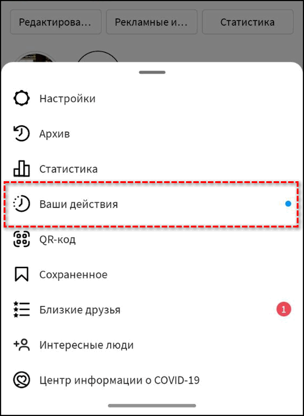
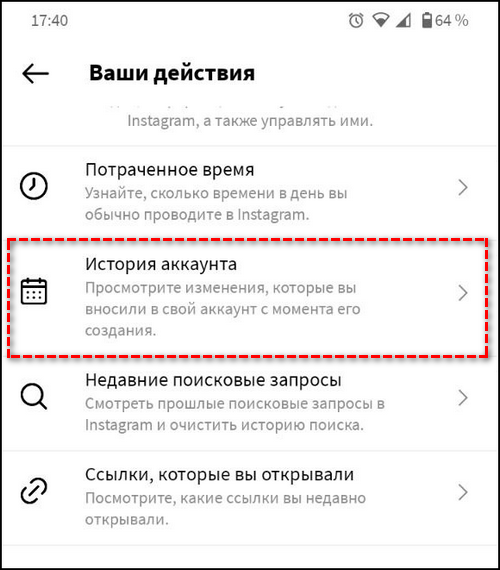
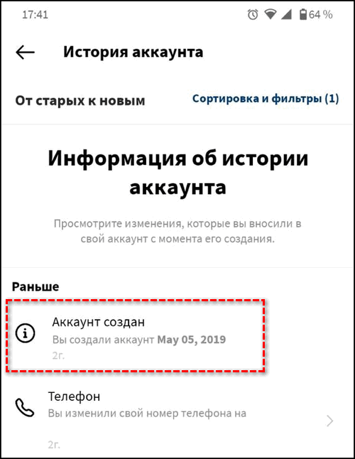
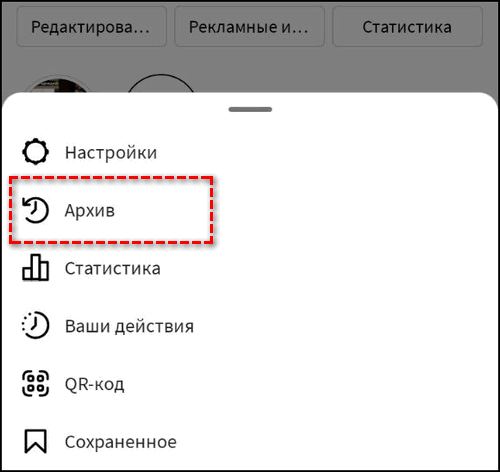
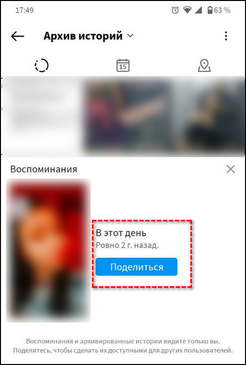
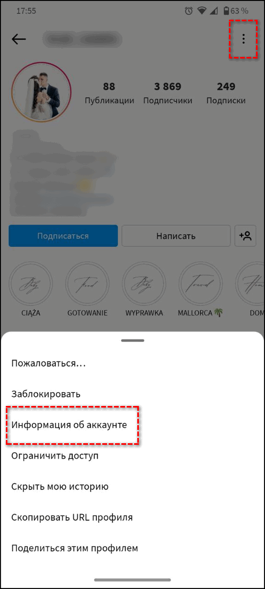
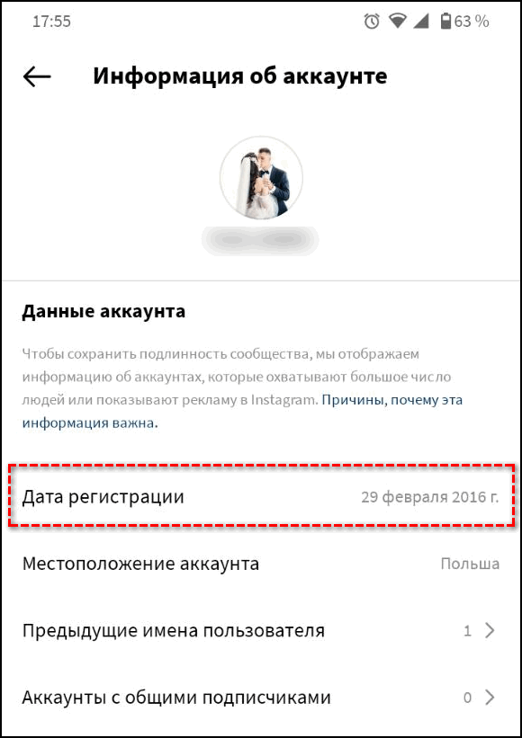

Как узнать когда создан аккаунт в Инстаграме

Узнать дату регистрации в Инстаграме* возможно через ранее опубликованные посты, раздел «Воспоминания», вкладку: «Ваши действия». Эти данные можно посмотреть и о чужом аккаунте, чтобы определить фейка или мошеннический профиль.
Как узнать дату регистрации - рабочий способ
Дата создания аккаунта в Инстаграме* находится во вкладке: «Ваши действия». Она была перенесена из «Личная информация», поэтому отыскать в предыдущих разделах не получится. Как посмотреть, когда была создана страница:
- Зайти в Инстаграм* – нажать сверху по трем полоскам.

- Ваши действия – История профиля.

- В конце списка пункт: «Дата регистрации».

Эта информация также будет доступна другим пользователям, если страница открытая и находится в статусе «Автор» или «Бизнес». В закрытом аккаунте сможет увидеть только владелец.
Посмотреть по публикациям
Активные пользователи Инстаграма* могут посмотреть свою дату регистрации через публикации. Нужно пролистать к дате первого поста и посмотреть, когда он был загружен на страницу. Таким же образом можно проверить и чужой аккаунт. Недостаток в том, что страница могла быть переименована или старые посты были удалены. Как быстрее пролистать аккаунт:
- Зайти с компьютерной версии – перейти в нужный профиль.
- Зажать клавишу скролла и опустить вниз.
- Подождать, пока будут прогружены все публикации.
- Перейти к первому посту – посмотреть, когда он был опубликован.
В Инстаграме* срок размещения указан по неделям. Поэтому пользователь сможет примерно отследить. Или же, можно пролистать с мобильной и посмотреть дату публикации.
Через воспоминания в Архиве
В разделе «Воспоминания» пользователь сможет посмотреть, когда он делал публикации в Историю. Такой вариант подходит, если страница была предположительно недавно создана: менее четырех лет назад. Потому что до этого периода функция «История» и в особенности «Воспоминания» не были доступны. Как посмотреть:
- Зайти в Инстаграм* – три полочки сверху.

- Архив – Историй.

- Пролистать к первой и посмотреть дату её размещения.
Если в этот же день была опубликована какая-либо история, то появится уведомление: «Было добавлено в этот же день 1 год назад». Эту запись можно заново добавить в Сторис, где появится плашка «Воспоминания».
Как посмотреть чужую дату регистрации в Инстаграме*
Посмотреть дату регистрации в Инстаграме* возможно не только для своего профиля, но и в аккаунте другого пользователя. Это работает со статусами «Бизнес» и «Автор», где демонстрация открытых данных необходима для повышения доверия у клиентов/читателей.
Как посмотреть:
- Перейти в нужный профиль – сверху три точки.
- Информация об аккаунте – первый пункт.

- Дата регистрации.

В том же разделе указана геолокация (где страница была зарегистрирована), предыдущие имена пользователя и общие подписчики. Если в профиле запущена промоакция – это также будет выделено отдельным пунктом.